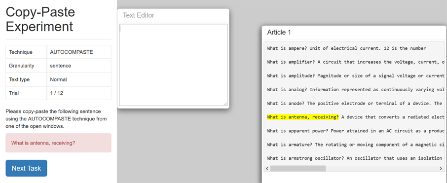

Dear participant , please read the instructions before the experiment.
You will test 2 different techniques of copying texts. Your task is to copy text into the text editor. You find the text you are suposed to copy in the text boxes to your right, the text will be highlighted in yellow. To aid you in finding the text you are to copy refer to the red box to your left. Do note that you are not able to or allowed to copy text directly from the red box and you may not write in the entire text by using your keyboard you are expected to use the 2 following copying techniques.
One technique is called ctrl-c ctrl-v. (Mac ⌘-c ⌘-v).
When using this technique you should mark the text you are instructed to copy and then press the "Ctrl" button and the "C" button simultaniuosly. Then you paste the copied texts to the Text Editor by pressing the "Ctrl" button and the "V" button simultaniously. The image below shows what the interface will look like when you are using this technique.
One technique is called autocompaste (in short ACP).
When using this technique you should write the three first letters of the text you copy in the Text Editor. You are then presented with a list of alternatives of texts. You then choose an alternative that fits the best using up/down buttons, if you wish to add or remove parts of the text you have copied you use the left/right buttons on your keyboard. The image below shows what the interface will look like when you are using this technique.

Please be aware that the technique you use will change sometimes. The length of the text you copy will also vary. There will be 2 boxes of source texts you will copy from, one that has random text in it and one that has normal text in it. Refer to the boxes that will be on your left that tells you which technique you are to use. Please press next to continue.